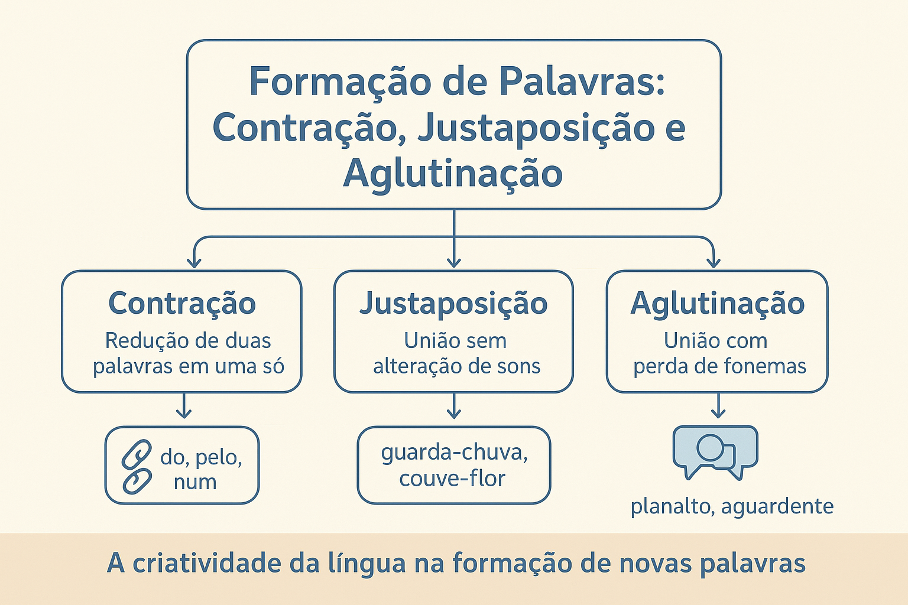

Diferença entre Contração, Justaposição e Aglutinação
A formação e a articulação das palavras constituem um dos capítulos mais fascinantes da Língua Portuguesa. No fluxo ininterrupto da comunicação verbal e escrita, os vocábulos não operam como elementos estanques e isolados; eles entram em contato físico, atraem-se por afinidade sintática ou semântica e sofrem processos contínuos de fusão, acomodação fonética e síntese estrutural.
Entre os fenômenos que unem palavras ou morfemas em uma única unidade vocabular ou relacional, destacam-se a contração, a justaposição e a aglutinação. Embora compartilhem a aparência superficial de agrupar termos distintos, esses três processos pertencem a ordens gramaticais diferentes: enquanto a justaposição e a aglutinação são mecanismos estritamente lexicais de composição (criam novos conceitos substantivos ou adjetivos), a contração é um fenômeno morfossintático de amálgama relacional entre conectivos e determinantes.
Neste guia descritivo e aprofundado, você compreenderá as diferenças conceituais, fonéticas e funcionais entre esses três mecanismos, a fronteira teórica entre combinação e contração, as transformações históricas sofridas pelas bases aglutinadas, além de conferir quadros comparativos, análises práticas de casos e questões comentadas para fixação.

A distinção teórica inicial: Composição Lexical vs. Amálgama Morfossintático
Para evitar confusões recorrentes na análise gramatical, é indispensável estabelecer uma linha divisória de partida entre os propósitos linguísticos de cada processo:
Composição Lexical (Justaposição e Aglutinação)
Constitui um processo genuíno de formação de novas palavras (Morfologia Lexical). Dois ou mais radicais independentes fundem-se para criar um novo verbete no dicionário, portador de uma identidade conceitual única que não se reduz à simples soma das partes.
Exemplos: passatempo, couve-flor, planalto, vinagre.
Amálgama Relacional (Contração)
Constitui um processo de adaptação morfossintática (Morfologia Funcional). Duas palavras gramaticais autônomas (geralmente uma preposição e um artigo ou pronome) unem-se no interior da frase para dar fluidez à cadeia sonora, mantendo suas funções sintáticas distintas em amálgama.
Exemplos: do (de + o), num (em + um), àquele (a + aquele).
A organicidade das fusões linguísticas
“A língua economiza energia muscular articulatória por meio de contrações e assimilações fonéticas, ao mesmo tempo em que enriquece seu patrimônio conceitual ao compor palavras novas por justaposição e aglutinação” (CUNHA; CINTRA, 2017, p. 118).
1. Contração: o amálgama de palavras gramaticais
A contração é a fusão estrita de duas ou mais palavras gramaticais funcionais em uma só, acompanhada da perda, assimilação ou modificação de fonemas. Trata-se de uma exigência fonética e estilística que visa conferir rapidez, leveza e eufonia à fala e à escrita formal.
Ocorre comumente pela fusão de preposições essenciais (a, de, em, por) com artigos definidos/indefinidos ou com diferentes subclasses de pronomes (demonstrativos, pessoais e indefinidos):
- Preposição de:
- de + o / a / os / as → do, da, dos, das (“O parecer do relator foi aprovado.”);
- de + este / esta / isto → deste, desta, disto;
- de + aquele / aquela / aquilo → daquele, daquela, daquilo;
- de + ele / ela / eles / elas → dele, dela, deles, delas;
- de + um / uma / uns / umas → dum, duma, duns, dumas (formas contraídas válidas, embora menos frequentes na escrita padrão moderna);
- de + onde → donde.
- Preposição em:
- em + o / a / os / as → no, na, nos, nas (houve evolução histórica a partir da forma arcaica en que assimilou o artigo latino: en + lo → no);
- em + um / uma / uns / umas → num, numa, nuns, numas;
- em + este / esse / aquele → neste, nesse, naquele;
- em + isto / isso / aquilo → nisto, nisso, naquilo.
- Preposição por (do latim per):
- por (per) + o / a / os / as → pelo, pela, pelos, pelas (a forma arcaica per + lo resultou no amálgama pelo).
- Preposição a (Fenômeno da Crase):
- a (prep.) + a (artigo) → à (fusão acentuada com sinal grave);
- a (prep.) + aquele / aquela / aquilo → àquele, àquela, àquilo.
Diferença fundamental: Combinação vs. Contração
Não confunda contração com combinação. Na combinação, as duas palavras unem-se sem qualquer alteração fonética ou perda de letras/sons (ex.: ao = preposição a + artigo o; aonde = preposição a + advérbio onde). Na contração, a perda ou mutação de sons é elemento obrigatório.
2. Justaposição: composição com integridade fonética
A justaposição é o processo de composição lexical no qual dois ou mais radicais (ou palavras primitivas autônomas) se unem lado a lado para gerar um novo vocábulo sem que ocorra qualquer alteração fonética ou perda mórfica em seus constituintes formadores.
Cada um dos elementos primitivos preserva a sua própria individualidade sonora e a sua acentuação tônica original. A união gráfica pode ocorrer com ou sem hífen, segundo as prescrições do Acordo Ortográfico vigente:
- Justapostos grafados com hífen:
- guarda-chuva (verbo guarda + substantivo chuva);
- segunda-feira (numeral ordinal segunda + substantivo feira);
- couve-flor (substantivo couve + substantivo flor);
- arco-íris (substantivo arco + substantivo íris);
- erva-doce (substantivo erva + adjetivo doce).
- Justapostos grafados aglutinadamente sem hífen (sem perda de som):
- passatempo (verbo passa + substantivo tempo);
- pontapé (substantivo ponta + substantivo pé);
- girassol (verbo gira + substantivo sol; a duplicação ortográfica da letra 's' serve apenas para preservar o fonema consonantal fricativo /s/ entre duas vogais, sem que haja perda de matéria fônica);
- paraquedas (verbo para + substantivo quedas).
3. Aglutinação: composição com mutação e perda fonética
A aglutinação é o processo de composição lexical no qual ocorre uma verdadeira fusão física e articulatória entre dois ou mais radicais, havendo perda, supressão ou alteração de fonemas em ao menos um dos constituintes.
Em decorrência dessa acomodação fônica, a palavra resultante subordina-se a um único acento tônico dominante, e as fronteiras morfológicas originais entre as palavras primitivas tornam-se menos evidentes para a percepção imediata do falante comum:
- Planalto: fusão de plano + alto (com a elisão da vogal temática final -o da primeira base);
- Aguardente: fusão de água + ardente (com a crase ou deglutição fonética do primeiro 'a');
- Vinagre: do latim vulgar vinum (vinho) + acre (azedo/ácido) → vinho + acre com síncope e sonorização de consoantes;
- Boquiaberto: fusão de boca + aberto (com transformação da vogal final -a na vogal de transição -i- e perda do acento original da base);
- Embora: contração e aglutinação histórica da locução adverbial temporal em + boa + hora;
- Fidalgo: redução secular da expressão filho + de + algo (aquele que provém de família de posse e linhagem);
- Pernalta / Pernilongo: união de perna + alta ou perna + longo, com alteração vocálica.
A opacidade morfológica da aglutinação
Diz-se que a aglutinação gera vocábulos de menor transparência mórfica. Enquanto em guarda-chuva qualquer falante identifica instantaneamente as duas partes formadoras, em vocábulos como vinagre ou fidalgo a identificação da composição exige a recuperação etimológica e histórica da evolução da língua.
Quadro comparativo analítico dos três processos
A tabela a seguir sistematiza as diferenças estruturais, fonéticas, funcionais e os exemplos representativos de cada fenômeno:
| Critério de Análise | Contração | Justaposição | Aglutinação |
|---|---|---|---|
| Natureza do Fenômeno | Morfossintático (amálgama relacional). | Morfologia Lexical (composição de palavras). | Morfologia Lexical (composição de palavras). |
| Objetivo Linguístico | Conectar termos da oração com rapidez e eufonia. | Criar novo verbete/conceito substantivo ou adjetivo. | Criar novo verbete/conceito substantivo ou adjetivo. |
| Comportamento Fonético | Ocorre perda ou alteração de fonemas dos conectivos. | Preservação fonética integral dos radicais formadores. | Perda, supressão ou alteração de fonemas em constituintes. |
| Acentuação Tônica | Gera formas monossilábicas átonas ou tônicas. | Mantém a independência dos acentos de cada radical. | Subordina os radicais a um único acento tônico principal. |
| Uso do Hífen | Nunca utiliza hífen (amálgama contínuo). | Pode ou não utilizar hífen, conforme a norma ortográfica. | Não utiliza hífen (os termos fundem-se em bloco único). |
| Exemplos Típicos | do, na, naquele, pelo, à | guarda-roupa, couve-flor, passatempo, girassol | planalto, aguardente, boquiaberto, fidalgo |
Exemplo prático de análise morfológica contextual
Análise de frase na prática
Observe o período abaixo e a dissecação morfológica de seus elementos em destaque:
“Ao amanhecer, os exploradores caminharam pelo vasto planalto, protegendo-se com um grande guarda-sol.”
- Pelo: é um caso de contração morfossintática da preposição arcaica per com o artigo definido masculino o (per + o → pelo). Exerce função de conectivo relacional de adjunto adverbial de lugar;
- Planalto: é um substantivo formado por composição por aglutinação (plano + alto). Houve supressão da vogal átona final -o do adjetivo plano e unificação sob uma única sílaba tônica (-al-);
- Guarda-sol: é um substantivo composto por composição por justaposição (do verbo guardar + substantivo sol). Ambas as bases preservam seus fonemas originais e seus respectivos acentos tônicos, ligados por hífen.
Questões para estudo e reflexão
Questão 1
Por que a forma ao é classificada como combinação e a forma do é classificada como contração?
Ver resposta comentada
Resposta comentada: Em ao (preposição a + artigo o), as duas palavras unem-se sem que haja qualquer supressão ou alteração de fonemas; os dois elementos permanecem inteiramente audíveis e preservados (combinação). Já em do (preposição de + artigo o), a vogal -e da preposição foi suprimida foneticamente no processo de fusão, caracterizando a contração com perda fônica.
Questão 2
A palavra girassol é grafada sem hífen e possui uma letra "s" adicional em relação à palavra sol. Por que ela continua sendo considerada formada por justaposição, e não por aglutinação?
Ver resposta comentada
Resposta comentada: Porque a adição da letra "s" é um expediente estritamente gráfico e ortográfico para manter a pronúncia do fonema fricativo surdo /s/ entre duas vogais (se ficasse *girasol, soaria com som de /z/). Foneticamente, não houve perda, supressão ou deformação dos sons das palavras gira e sol, que preservam sua integridade fônica e tônica original intacta.
Questão 3
Qual é a diferença funcional de propósito linguístico entre a contração e a aglutinação?
Ver resposta comentada
Resposta comentada: A aglutinação tem como propósito criar uma nova unidade lexical (um substantivo ou adjetivo inédito que enriquece o léxico da língua, como aguardente). A contração não cria novos substantivos nem novos conceitos; ela simplesmente funde instrumentos gramaticais (como preposições e artigos) para facilitar a fluidez sintática da oração.
Questão 4
Qual é a etimologia e o processo formador da palavra embora?
Ver resposta comentada
Resposta comentada: A palavra embora originou-se da fusão da locução adverbial medieval em boa hora. Ao longo dos séculos, sofreu forte redução fonética e aglutinação histórica de seus elementos, consolidando-se no português moderno ora como advérbio modal de movimento (“ir embora”), ora como conjunção subordinativa concessiva (“embora chova”).
Questão 5
Por que a gramática normativa proíbe a contração da preposição de com o artigo quando o termo seguinte funciona como sujeito de um verbo no infinitivo?
Ver resposta comentada
Resposta comentada: Porque o sujeito de uma oração não pode vir preposicionado. Assim, em construções como “Chegou a hora de o trem partir”, a preposição de introduz a oração reduzida inteira e pertence a ela, enquanto o artigo o determina exclusivamente o sujeito trem. Por essa razão, a norma culta veda a contração *“do trem partir”.
Resumo das Diferenças entre Contração, Justaposição e Aglutinação
- A contração é um amálgama de palavras gramaticais (preposição + artigo/pronome) com perda de som, voltada à fluidez oracional;
- A combinação é a união de preposição e artigo sem nenhuma alteração ou perda sonora (ex.: ao, aos, aonde);
- A justaposição une dois ou mais radicais sem perda de sons ou acentos, gerando um novo conceito (ex.: passatempo, couve-flor);
- A aglutinação funde dois ou mais radicais com perda ou mutação fonética, unificando a tonicidade (ex.: planalto, vinagre);
- A justaposição pode empregar hífen ou grafia direta; a aglutinação e a contração grafam-se sempre de forma contínua em bloco único;
- Enquanto contrações desempenham papel puramente sintático-relacional, aglutinações e justaposições ampliam o acervo conceitual do léxico.
Perguntas frequentes sobre fusões vocabulares
Qual a diferença básica entre justaposição e aglutinação?
Na justaposição, não há perda de sons dos radicais originais (como em guarda-sol). Na aglutinação, há perda ou alteração fonética em pelo menos uma das palavras que se unem (como em água + ardente = aguardente).
A palavra "vinagre" é uma aglutinação?
Sim. Ela provém historicamente da composição por aglutinação dos étimos latinos vinum (vinho) + acre (azedo), sofrendo transformações e supressões de fonemas ao longo da formação da língua portuguesa.
O que diferencia "contração" de "combinação"?
Na combinação, as palavras juntam-se sem que nenhuma letra ou fonema seja suprimido (como em a + o = ao). Na contração, ocorre perda ou mutação obrigatória de fonemas (como em de + o = do; em + o = no).
A crase é considerada uma contração?
Sim. A crase é a fusão da preposição a com o artigo definido feminino a (resultando em à) ou com os pronomes demonstrativos aquele, aquela, aquilo (resultando em àquele, àquela, àquilo).
Por que "passatempo" não tem hífen e continua sendo justaposição?
Porque o Acordo Ortográfico consagra que certas palavras compostas por justaposição perderam a noção de composição separada e devem ser grafadas juntas, sem hífen. O processo continua sendo justaposição porque os radicais passa e tempo foram preservados integralmente sem perda de som.
Considerações finais
O estudo comparado entre contração, justaposição e aglutinação permite desvelar a impressionante economia funcional da Língua Portuguesa. A língua demonstra, simultaneamente, uma vertente prática e relacional — que agiliza as orações fundindo artigos e preposições em contrações elegantes — e uma vertente conceitual e inventiva — que forja novas realidades do pensamento combinando radicais inteiros ou moldando-os na aglutinação.
O domínio dessas distinções confere precisão analítica insubstituível para estudantes, vestibulandos e pesquisadores de Letras, servindo como chave mestra para resolver dúvidas ortográficas de hifenização e desvendar a etimologia viva que pulsa em cada palavra do idioma.
Conteúdos relacionados
- Processos de Formação de Palavras: derivação, composição e outros
- Estrutura e Formação das Palavras: morfemas, radical, afixos e desinências
- Prefixos e Sufixos de Intensidade e Diminuição
- Introdução à Morfologia: o estudo da forma das palavras
- Classes Morfológicas das Palavras: análise e classificação
- Morfologia: Estrutura, Formação e Classes de Palavras — Índice Geral
- Famílias Lexicais e Relações Morfológicas
Referências
- AZEREDO, José Carlos de. Gramática Houaiss da Língua Portuguesa. 4. ed. São Paulo: Parábola Editorial, 2021.
- BECHARA, Evanildo. Moderna Gramática Portuguesa. 39. ed. Rio de Janeiro: Nova Fronteira, 2019.
- CUNHA, Celso; CINTRA, Lindley. Nova Gramática do Português Contemporâneo. 7. ed. Rio de Janeiro: Lexikon, 2017.
- MATTOSO CÂMARA JR., Joaquim. Estrutura da Língua Portuguesa. 54. ed. Petrópolis: Vozes, 2008.
- ROCHA LIMA, Carlos Henrique da. Gramática Normativa da Língua Portuguesa. 46. ed. Rio de Janeiro: José Olympio, 2000.
- SANDMANN, Antônio José. Morfologia Léxica do Português. São Paulo: Contexto, 2002.
Explore outros conteúdos
Continue seus estudos acessando outras seções do site Mestre Kira: